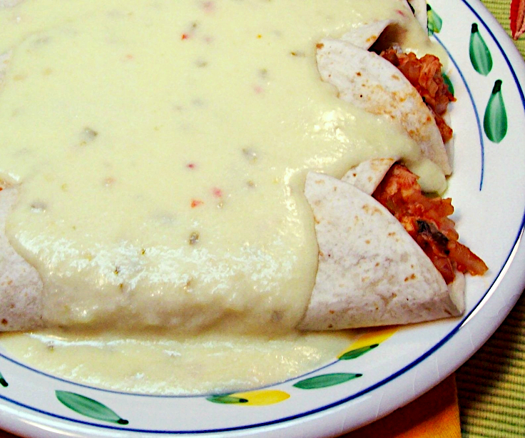

Odin Recipes
Chicken Enchiladas Smothered with Creamy Cheese Sauce

Description
Cooked chicken flavored with salsa and fresh cilantro wrapped in a flour tortilla and smothered with a creamy cheese sauce.
Ingredients
- 6 ounces onion
- 8 ounces green bell peppers
- 8 ounces cooked chicken
- 1/2 cup tomato sauce
- 2 teaspoons salsa
- 12 sprigs cilantro
- 2 tablespoons & 2 teaspoons crushed garlic
- 1 cup milk
- 1 tablespoon & 1 teaspoon flour
- 2 tablespoons & 2 teaspoons margarine
- 4 ounces grated jack cheese
- 4 flour tortillas
Steps
- Chop onion and green pepper and place in a saucepan along with cooked chicken, tomato sauce, salsa, cilantro and chopped garlic. Heat on medium, stirring often.
- In a small bowl, whisk together milk and flour until there are no lumps.
- Melt margarine in a small saucepan and pour in milk and flour mixture. Stir in grated cheese and continue stirring until blended and creamy.
- Warm tortilla in oven at 400 degrees for 5 minutes. Fill warm tortilla with chicken mixture and pour cheese sauce over the top.